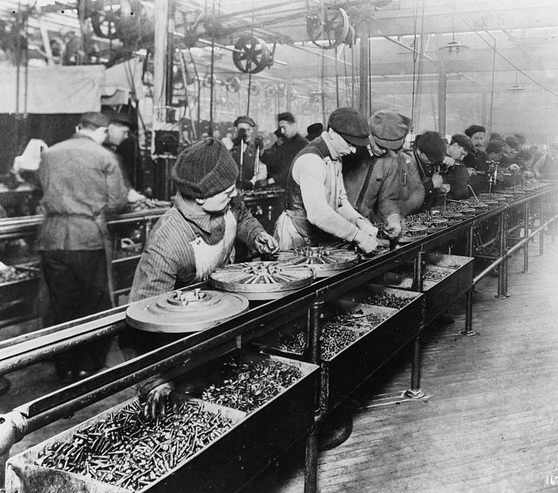
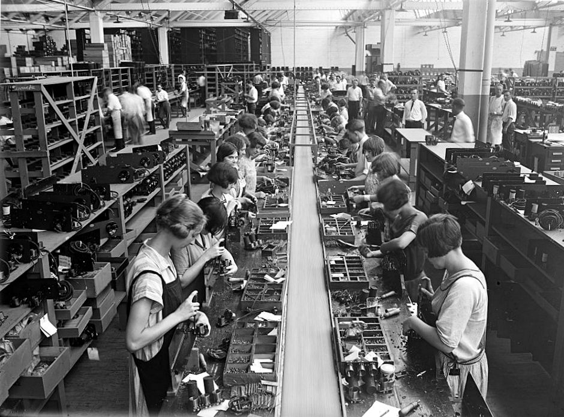

+++
title = "Kitlesel Üretim: Fordizm"
description=""
url="sayi-13/kitlesel-uretim-fordizm-nedir"
aciklama="Fordizm, bir üretim ve birikim rejimi olarak teknik anlamda tanımlanabileceği gibi, sosyal ve kültürel etkileri ile birlikte ele alınarak geniş anlamda da tanımlanabilmektedir. Teknik anlamda Fordizm; sanayi üretiminin büyük oranda kitlesel üretim olarak gerçekleştirildiği, idari işler ile kol kuvvetine dayalı işlerin Taylorist bir ayrımla belirlendiği, işbölümünün ve iş tanımlarının katı bir şekilde yapıldığı, ürün standartlaştırmasının verimlilik artışları getirdiği ve artan talebin bu standartlaşmayı hızlandırdığı bir üretim biçimidir."
type="sayfa"
thumb="/img/tensegrity-thumbnail.jpg"
date = "2021-09-06"
sayi=["13"]
sayfa="01"
yazar=["atahan gokturk"]
tags= ["ana sayfa", "dergi"]
+++

<div class="container">
   <h2 id="fordizm-nedir">Fordizm Nedir?</h2>
   <div class="row">
      <div class="col-md-4">
         <p>
            Fordizm, bir üretim ve birikim rejimi olarak teknik anlamda
            tanımlanabileceği gibi, sosyal ve kültürel etkileri ile birlikte ele
            alınarak geniş anlamda da tanımlanabilmektedir.
         </p>
         <p>
            <strong>Teknik anlamda Fordizm;</strong> sanayi üretiminin büyük
            oranda kitlesel üretim olarak gerçekleştirildiği, idari işler ile
            kol kuvvetine dayalı işlerin <strong>Taylorist</strong> bir ayrımla
            belirlendiği, işbölümünün ve iş tanımlarının katı bir şekilde
            yapıldığı, ürün standartlaştırmasının verimlilik artışları getirdiği
            ve artan talebin bu standartlaşmayı hızlandırdığı bir üretim
            biçimidir.
         </p>
      </div>
      <div class="col-md-4">
         {{}}<small>Henry Ford, 1863 - 1947</small>
      </div>
      <div class="col-md-4">
         {{}}
      </div>
   </div>

   <hr />
   <div class="row">
      <div class="col-md-4">
         <p>
            Gramsci tarafından getirilen, Fordizm’in geniş açıdan eleştirel
            tanımı ise;
         </p>
         <blockquote>
            <p>
               Kapitalist medeniyette yeni bir dönemi başlatan, plânlı ekonomiye
               geçişe damgasını vuran, yalnızca üretimi değil bireyi de
               plânlayan, yeni bir işçi (ve insan) tipi yaratmak için hayatının
               en mahrem alanlarını işgal eden ve bir montaj hattı ile sınırlı
               kalmayan yaklaşımdır.
            </p>
         </blockquote>
      </div>
      <div class="col-md-4">
         <div class="bg-grey p-md-5">
            <p>
               Antonio Francesco Gramsci; 22 Ocak 1891 - 27 Nisan 1937) bir
               İtalyan Marksist filozof, gazeteci, dilbilimci, yazar ve
               politikacı. Felsefe, siyaset teorisi, sosyoloji, tarih ve
               dilbilim üzerine yazdı. İtalya Komünist Partisi&#39;nin kurucu
               üyesi ve bir zamanlar lideriydi.
            </p>
         </div>
      </div>
      <div class="col-md-4">
         {{}}<small>Antonio Gramsci, 1891 - 1937</small>
      </div>
   </div>

   <h2 id="fordizmin-gelişme-süreci">Fordizmin Gelişme Süreci</h2>
   <div class="p-md-5 bg-grey">
      <p>
         Henry Ford’un hareketli montaj hattı ile araba üretmeye ve işçilerine
         günde 8 saat çalışma karşılığı 5 dolar ödemeye başladığı 1914,
         Fordizm’in sembolik başlangıç yılı sayılmaktadır. Bu başlangıç,
         kısa zamanda yaygınlık kazanamayacak ve ancak 1945’ten sonra bu akımın
         hâkimiyetini kurduğu kabul edilecektir.
      </p>
   </div>

   <div class="row">
      <div class="col-md-6">
         <p>
            Hareketli montaj hattı ile seri üretim yapmakla birlikte, seri
            üretimi ilk yapan kişi Ford değildir. Seri üretim yöntemi ilk olarak
            1798’de, ABD ordusundan 10.000 adet acil tüfek üretim talebi ile
            karşılaşan, ateşli silah üreticisi
            <strong>Eli Whitney</strong> tarafından gerçekleştirilmiştir.
            Tüfeğin her bir parçası için ayrı bir makinede kalıp tasarlayan
            Whitney, ürettiği parçaları birleştirerek silahı oluşturmayı
            başarmıştır. Ford, seri üretim yöntemini otomobil sanayisine
            uygulamıştır.
         </p>
         {{}}
      </div>
      <div class="col-md-6">
         {{}}<small>Eli Whitney, 1765 - 1825</small>
      </div>
   </div>

   <div class="row">
      <div class="col-md-4">
         <p>
            Henry Ford’un geniş çapta yararlandığı bir başka isim
            <strong>F.W. Taylor</strong>’dur. Taylor’un “bilimsel yönetim”
            yaklaşımına göre; işçilerin yaptıkları işin parçalara ayrılarak
            ayrıntılı olarak incelenmesi, kaydedilmesi ve bu işin yapılması için
            en basit ve uygun yolun bulunmasıyla çok büyük verimlilik artışları
            sağlanacaktır. Ford, Taylor’un hareket ve zaman etütleri içeren
            bilimsel yönetim yaklaşımını uygulamaya koymuştur.
         </p>
      </div>
      <div class="col-md-4">
         <div class="bg-grey p-md-3">
            <small>
               <strong>Frederick Winslow Taylor</strong> (20 Mart 1856 - 21 Mart
               1915) Amerikalı bir makine mühendisidir. Endüstriyel verimliliği
               artırmaya yönelik yöntemleriyle yaygın olarak bilinmektedir.
               Taylor, Verimlilik Hareketi&#39;nin entellektüel liderlerinden
               biriydi ve fikirleri, geniş anlamda, İlerleme Dönemi&#39;nde
               (1890&#39;lar-1920&#39;ler) oldukça etkiliydi. 1911&#39;de
               Taylor, 2001&#39;de Yönetim Akademisi Fellows of the Academy of
               Management&#39;ın yirminci yüzyılın en etkili yönetim kitabı
               olarak oyladığı Bilimsel Yönetimin İlkeleri adlı kitabında
               verimlilik tekniklerini özetledi. Mühendislik ilkelerini fabrika
               zemininde yapılan işlere uygulamak konusundaki öncü çalışmaları,
               günümüzde endüstri mühendisliği olarak bilinen mühendislik
               dalının yaratılmasında ve geliştirilmesinde etkili olmuştur.
               Taylor ayrıca teniste ulusal yarışan bir atletti.
            </small>
         </div>
      </div>
      <div class="col-md-4">
         {{}}<small>Frederick Winslow Taylor, 1856 - 1915</small>
      </div>
   </div>

   <div class="row">
      <div class="col-md-6">
         <p>
            Ford’u özel yapan ve Taylor’dan tamamen ayıran yönü, onun
            vizyonudur. O, kitle üretiminin; kitle tüketimini doğuracağını, emek
            gücünün kullanımı için yeni bir sistem, emeğin yönetimi ve denetimi
            için yeni politikalar, yeni bir estetik ve psikoloji... Kısaca yeni
            bir tür rasyonel, modernist, popülist demokratik toplum
            oluşturacağını öngörmüştür.
         </p>
      </div>
      <div class="col-md-6">
         {{}}<small>Ford Motor Şirketi: Üretim, Dagenham, England</small>
      </div>
   </div>

   <div class="row">
      <div class="col-md-6">
         <p>
            İşçilere yüksek ücret vermek Ford için yeterli değildir. Onların
            paralarını uygun şekilde harcayacaklarından da emin olmak
            istemektedir. 1916’da evlere bir sosyal görevliler ordusu
            göndererek, yeni tüketim insanının sistemin beklediği rasyonel ve
            sağduyulu (alkolsüz) tüketim kapasitesine, düzgün aile hayatlarına
            ve ahlâki değerlere sahip olmalarını sağlamak istemiştir.
         </p>
         <p>
            Sistemin ekonomiyi yönlendirme gücüne o kadar inanmıştır ki, 1929
            ekonomik krizi esnasında işçi ücretlerini artırmıştır. Fakat ağır
            rekabet şartları onu ücretleri düşürmeye ve işçi çıkarmaya mecbur
            etmiştir. Kriz ve savaş yıllarındaki olağanüstü yaklaşımlar
            döneminin bitmesi ile 1945’te Fordizm olgunluk dönemine ulaşmıştır.
         </p>
      </div>
      <div class="col-md-6">
         {{}}<small>
            Ford Model T arabaları, fabrikadan görüntü. (Hulton Archive/Getty
            Images tarafından)
         </small>
      </div>
   </div>

   <div class="row">
      <div class="col-md-6">
         <p>
            Temelde talep yetersizliğinden kaynaklanan sorunların aşılması,
            ancak belli bir talebi garantileyen Keynesçi makro ekonomik
            politikalarla mümkün olabilmiştir. Fordist üretimin hâkim olduğu
            ülkeler, Keynesçi refah devleti politikaları uygulayarak, Fordist
            üretim modelinin önünü açmıştır.
         </p>
         <p>
            1945’lere kadar gerek karşı çıkışlarla gerekse olağanüstü şartlarla
            karşılaşan ve gelişme fırsatı bulamayan Fordizm, 1945-1973 yılları
            arasında egemen üretim rejimi olarak varlığını sürdürmüştür.
            Başlangıçta Taylor’un yöntemlerini kullanmakla birlikte, Fordizmi onun yerini
            alan bir aşama olarak nitelemek mümkündür. Üretim sürecinde
            işgücünün yoğunluğunu artıran, niteliksel değişimini sağlayan ve
            tüketim düzeyini de artıran bir yaklaşım ortaya koymuştur.
         </p>
         <p>
            Fordist üretim ve birikim rejiminin 1973’ten sonra birden ortadan
            kalktığını söylemek mümkün değildir. Sadece egemen üretim ve birikim
            rejimi olmaktan çıkmış, yeni yaklaşımların gelişmesiyle ekonomideki
            ağırlığı azalmıştır. Ancak, başta otomotiv olmak üzere bazı
            sektörlerde, tüketici taleplerini dikkate alan ürün
            farklılaştırmalarına gidilerek, kitlesel üretim modelinin
            sürdürüldüğü gözlenebilmektedir.
         </p>
      </div>
      <div class="col-md-6">
         {{}}<small>Modern Times filminden sahne.</small>
      </div>
   </div>

   <h2 id="fordizmin-özellikleri">Fordizmin Özellikleri</h2>
   <p>
      Fordist üretim ve birikim rejiminin ayırıcı özellikleri şöyle
      sulanabilmektedir:
   </p>
   <div class="row">
      <div class="col-md-6">
         <ol start="1">
            <li>
               <strong>Kitle üretimi ve tüketimi:</strong> Yapılan üretim belli
               özel müşterileri değil, toplumun genelini hedeflemektedir. Kitle
               üretimi için gerekli olan kitlesel talebin örgütlenmesi ve
               oluşturulması öngörülmektedir.
            </li>
            <li>
               <strong>Ürünlerde yüksek standartlaşma:</strong> Önceden tespit
               edilen kitle tüketim profiline göre standart ürünler
               tasarlanmakta ve üretilmektedir. Kitlesel üretim için
               standartlaşma gereklidir.
            </li>
            <li>
               <strong>Esnek olmayan bir üretim süreci:</strong> Üretim süreci,
               standart bir malın kitlesel üretimi için tasarlandığından, malın
               niteliğinde kolaylıkla değişim yapmaya müsait değildir. İmalat
               hattında, rutin işler yapacak işgücü çalışmakta olduğundan,
               sadece standart ürünün imalatını yapma becerisi söz konusudur.
            </li>
            <li>
               <strong
                  >İş örgütlenmesinde yeni teknolojiler kullanılmakta:</strong
               >
               Rutin işler yapması beklenen işgücünün yerine makine
               kullanılabilmekte, yeni teknolojilerle işgücünün çeşitli
               bileşimleri, verimliliği artırma amacıyla denenmekte ve
               kullanılmaktadır.
            </li>
            <li>
               <strong
                  >Rutin işler yapan yarı eğitimli işgücü kullanımı
                  öngörülmekte:</strong
               >
               Seri ve kitlesel üretim hattında, standart ürünün belli bir
               bölümündeki görevini yapacak ve kolayca ikame edilebilecek işgücü
               çalıştırılmaktadır.
            </li>
            <li>
               <strong
                  >Keynesçi ekonomik politikalar ve piyasa düzenlemesi:</strong
               >
               Gerekli kitlesel talebin sağlanabilmesi için, devlet müdahalesi
               ile gelişen sanayileşmeye sıcak bakılmakta, Fordist sistemin
               zayıf noktası olan kitlesel talebin refah devleti politikalarıyla
               oluşturulması istenmektedir.
            </li>
            <li>
               <strong
                  >Diğer sektörler için belirleyicidir ve katma değerin
                  oluşumunda egemendir:</strong
               >
               Ekonomideki ana ağırlığı kitlesel üretim yapan birimler
               taşımakta, diğer üretim birimleri ise bu sisteme uyumlu küçük
               sistemler durumunda kalmaktadırlar.
            </li>
            <li>
               <strong>Hegemonik bir nitelik göstermektedir:</strong> Güçlü bir
               yönlendirme ve bütünleşme eğilimi söz konusudur. Bireylerin
               sisteme uyumu, özel hayatlarına varıncaya kadar denetlenerek ve
               yönlendirilerek sağlanmaya çalışılmaktadır.
            </li>
            <li>
               <strong>Bir yaşam tarzı düzenleme biçimidir:</strong> İnsanlara
               önce gelir sağlama, sonra da bu geliri nasıl kullanacaklarını
               öğreterek yaşam biçimlerini doğrudan doğruya belirleme çabası
               görülmektedir.
            </li>
         </ol>
      </div>
      <div class="col-md-6">
         {{}}<small>Ford Üretim Bandı</small>
         {{}}<small>Ford Üretim Bandı</small>
      </div>
   </div>

   <h2 id="fordizmin-bunalımı">Fordizmin Bunalımı</h2>
   <div class="row">
      <div class="col-md-6">
         <p>
            Fordist üretim rejiminde 1960’lı yılların ortalarından itibaren
            ciddi sorunlar olduğuna dair işaretler belirmeye başlamıştır.
            1956-73 yılları arasında, Fordizm ve Keynes’çiliğin yetersizliği
            açıkça ortaya çıkmaya başlamıştır. Bu yetersizlik, genelde tek bir
            kelimeye indirgendiğinde, esnekliğin olmaması anlamında “sertlik”
            (rigidity) olarak ifade edilebilmektedir.
         </p>
         <p>
            Kitle üretimini amaçlayan büyük ölçekli sabit sermaye
            yatırımlarının, tüketicinin değişen taleplerini karşılayacak
            esnekliğe sahip olmaması önemli bir unsur olmuştur. Bunun yanında,
            emek piyasasının ve işçi sözleşmelerinin de esnekliğe sahip olmaması
            ve değişime karşı kuvvetli işçi direnişi ile karşılaşılması (1968-72
            grev dalgası), Fordizmin kendini yenilemesini engellemiştir.
         </p>
         <p>
            Fordist üretim anlayışının, başlangıçta ortaya koyduğu talebi
            belirleme yaklaşımı başarılı olsaydı, tüketicinin farklı tercihleri
            sorunu ortaya çıkmayacağından, talebin belirlenememesinin bunalıma
            zemin teşkil ettiği görüşü öne sürülebilir.
         </p>
      </div>
      <div class="col-md-6">
         {{}}<small>Fransa, 1968 Mayıs olayları.</small>
         <div class="bg-grey p-md-2">
            <small>
               13 Mayıs 1968&#39;de öğrenciler, sendikalar ve sol partiler
               yürüyüş düzenledi ve yüz binlerce Parisli sokaklara döküldü.
               Ardından olaylar genel bir greve yol açtı. Fransa&#39;nın
               tamamında
               <strong>yaklaşık on milyon işçi greve katıldı.</strong>
            </small>
         </div>
      </div>
   </div>

   <h2 id="endüstriyel-tasarım-bakımından-fordizm">
      Endüstriyel Tasarım Bakımından Fordizm
   </h2>
   <div class="row">
      <div class="col-md-6">
         <p>
            Fordist üretim yönteminde üretim bandının oluşu ve bir işçinin bir
            eylemi sürekli tekrarlamasının insanı robotlaştırdığını söyleyebiliriz.
            Ancak günümüze geldiğimizde otomasyon sistemleri, bu robotlaşmış
            insanların yerlerini almıştır. Robotlaşan insanlar yerine robotlar
            tarafından üretimin yapılığı günümüzde; bu işçiler yine işlevsiz
            hale gelmiştir.
         </p>
         <p>
            Eylemi planlama, adımlama gibi işlemlerin olmadığı durumda bu
            otomasyon sistemlerine geçmek mümkün değildi. Öncesinde bu eylemleri
            yapacak olan insanlar gerekliydi. Yani üretimde araç olarak insan
            kullanıldı. Şimdi araçların yerlerini cansızların almış olması işçi
            sınıfın durumunu iyileştirdiğini söylemek mümkün değildir.
         </p>
      </div>
      <div class="col-md-6">
         {{}}<small>Modern Times filminden kare.</small>
      </div>
   </div>
   <div class="row">
      <div class="col-md-6">
          <div class="bg-sari p-md-3 mt-2">         <p>
            Üretim yöntemleriyle birlikte tasarım anlayışı da değişmiştir.
            Kitlesel üretimde standardizasyon olduğu için tasarımda hızlı ve
            sürekli değişim mümkün değildir. Karmaşık üretim tekniklerinden
            üretilen parçalar, işlem adımlarıyla birlikte bir araya
            getirilmiştir. İyi bir organizasyonla bu mümkündür. Böylece;
            mühendislerin, tasarımcıların ve ustaların bir arada çalışmasını
            zorunlu kılmıştır. Endüstriyel tasarımcı ise bu organizasyonun
            başında ve ortasında sıklıkla görev alarak diğer alanlardan
            beslenerek ve diğer alanları besleyerek bu organizasyonun parçası
            haline gelmiştir.
         </p></div>
      </div>
      <div class="col-md-6">
         {{}}<small>Modern Times filminden sahne.</small>
      </div>
   </div>

   <hr>
   <div class="row">
      <div class="col-md-7"><h3 class="mt-1" id="film-önerisi-modern-times">Film Önerisi: Modern Times</h3>
         <p>1936 - 1 saat 27 dakika</p>
         <p>Yönetmen: Charlie Chaplin</p>
         <p>
            <a
               href="https://www.youtube.com/watch?v=2gLa4wAia9g&amp;t=15s"
               target="_blank"
               >Youtube&#39;dan izleyebilirsiniz. ↗</a
            >
         </p>
                 {{}}
      </div>
      <div class="col-md-5"> {{}}

      </div>
   </div>
   <button
   class="btn markutbtn"
   data-target="#my-collapse"
   data-toggle="collapse"
   aria-expanded="false"
   aria-controls="my-collapse"
   >
   Kaynaklar
   </button>
   <div id="my-collapse" class="collapse">
   <pre> <small><code>  
    KAPİTALİST GELİŞİM SÜRECİNDE FORDİZM VE POST - FORDİZM, ALİ RIZA SAKLI, 2007 https://en.wikipedia.org/wiki/Fordism

    https://www.britannica.com/topic/Fordism
    
    https://cdn-acikogretim.istanbul.edu.tr/auzefcontent/20_21_guz/modern_uretim_sistemleri/1/index.html
    
    
    
    https://www.galeyandergi.com/sayi-3/fransa-1968/
    
    https://libcom.org/book/export/html/45466
    
    
    
    https://en.wikipedia.org/wiki/Henry_Ford
    
    https://en.wikipedia.org/wiki/Frederick_Winslow_Taylor
    
    https://en.wikipedia.org/wiki/Eli_Whitney
    
    https://www.sfmnews.com/2017/01/henry-ford-la-extravagante-historia-del.html
     </code></small></pre>
   </div>
   
</div>
